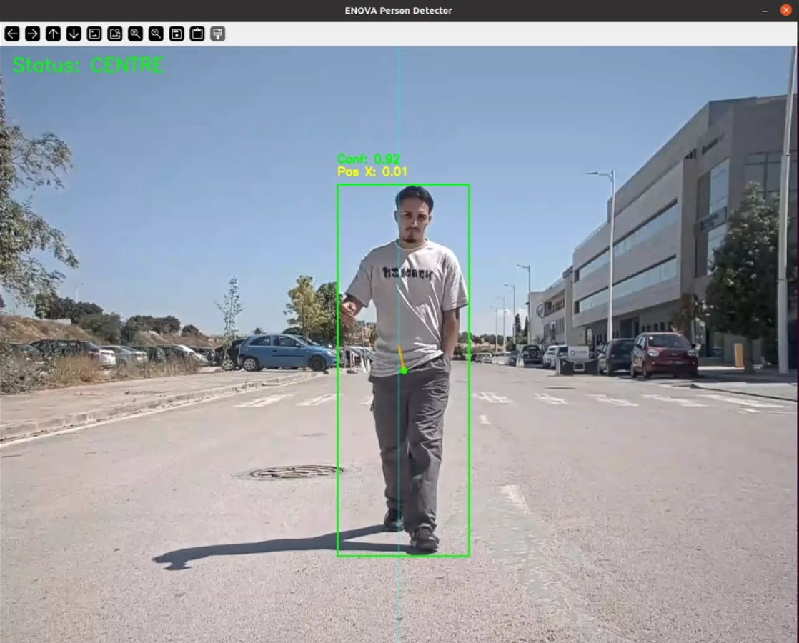
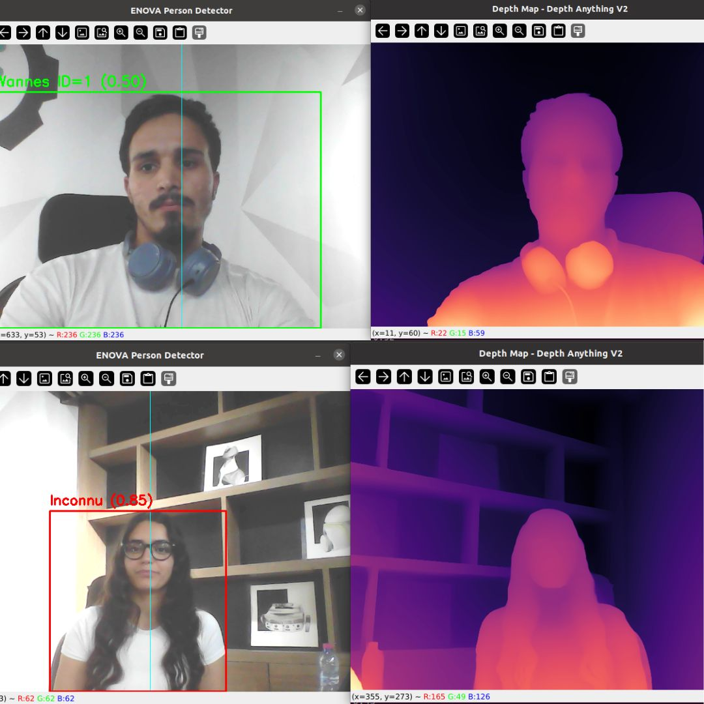
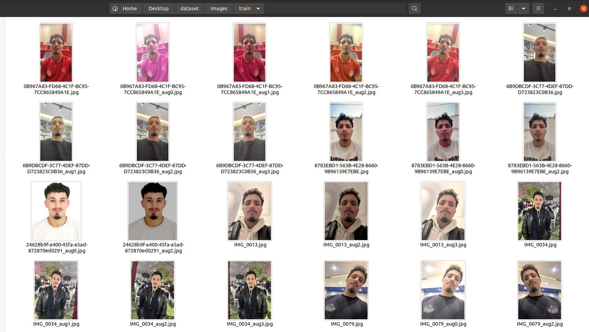

Enova Robotics / June – July 2026
Intelligent Person Following
From a camera stream to a robot that follows an identified person: a complete perception and control pipeline developed at Enova Robotics.

The objective
Build a real-time system that detects a person, identifies the intended target, estimates their distance and passes this information to a following controller.
My contribution
I designed four communicating ROS 2 nodes, created a dataset from self-captured photos, trained a YOLOv8 person detector and integrated tracking, facial recognition and depth estimation.
Detection, identity and distance
YOLOv8 provides person detections, ByteTrack maintains tracks, and DeepFace with FaceNet identifies the target. Depth Anything V2 adds distance estimation to the perception pipeline.
From development to outdoor tests
The supplied captures document the training dataset, target recognition, depth maps and an outdoor tracking test. The robot photograph shows the physical platform used for the project.
Inside the Enova system
From a camera frame to a follow command.
01 / INPUTCamera stream
Streams the camera frames into the ROS 2 perception pipeline.
02 / PERCEPTIONPerson detector
YOLOv8 detects people, ByteTrack maintains tracks, and DeepFace / FaceNet identifies the target.
03 / ESTIMATIONDistance estimator
Depth Anything V2 estimates distance from the detected person.
04 / CONTROLFollow controller
Uses the perception and distance information to control person-following behavior.
PROJECT PHOTOS
A closer look at the work.
Select a photo to view it in full.
The mobile robotic platform used for the project.

Detection and target position displayed during an outdoor test.

Side-by-side captures of target recognition and Depth Anything V2.

Training images and visible augmented variants used in the project.